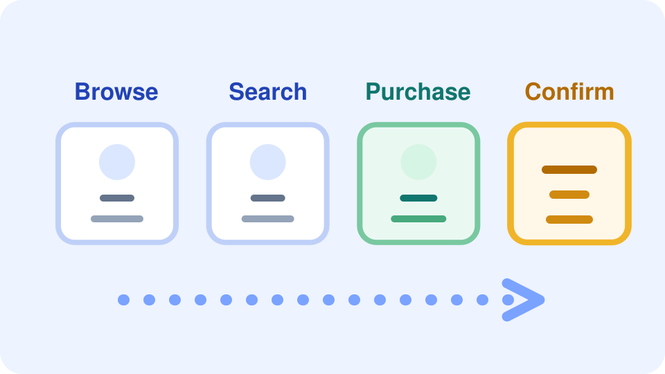

Define the path that creates user value, then measure the path instead of isolated components.
A critical user journey is the sequence of interactions a user must complete to get real value from the system.

These concepts give you a practical frame for defining and measuring a critical journey.
Reliability should protect what users are trying to accomplish.
Include both visible interactions and required systems behind them.
Differentiate common tasks from moments where value is actually delivered.
Track the whole journey so completion failures show up as user-visible reliability issues.
CUJs make reliability work legible to both engineering and the business.
Objectives stay tied to user success instead of internal subsystem vanity metrics.
A broken purchase flow deserves a different response than degraded browsing.
Journey maps expose dependencies that can break completion even when single services look healthy.
Critical paths justify stricter targets and faster response.
Not every shopping action carries the same reliability weight. Focus on the steps where user intent turns into completed value.
Each step should be paired with the signal that best exposes user-visible failure along the journey.